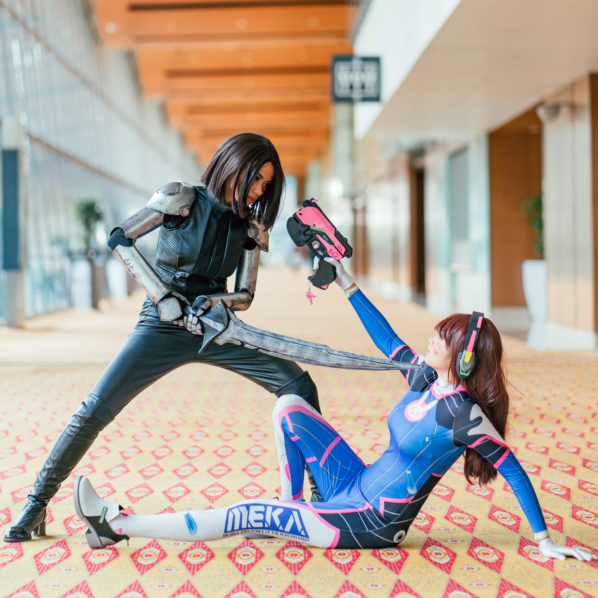
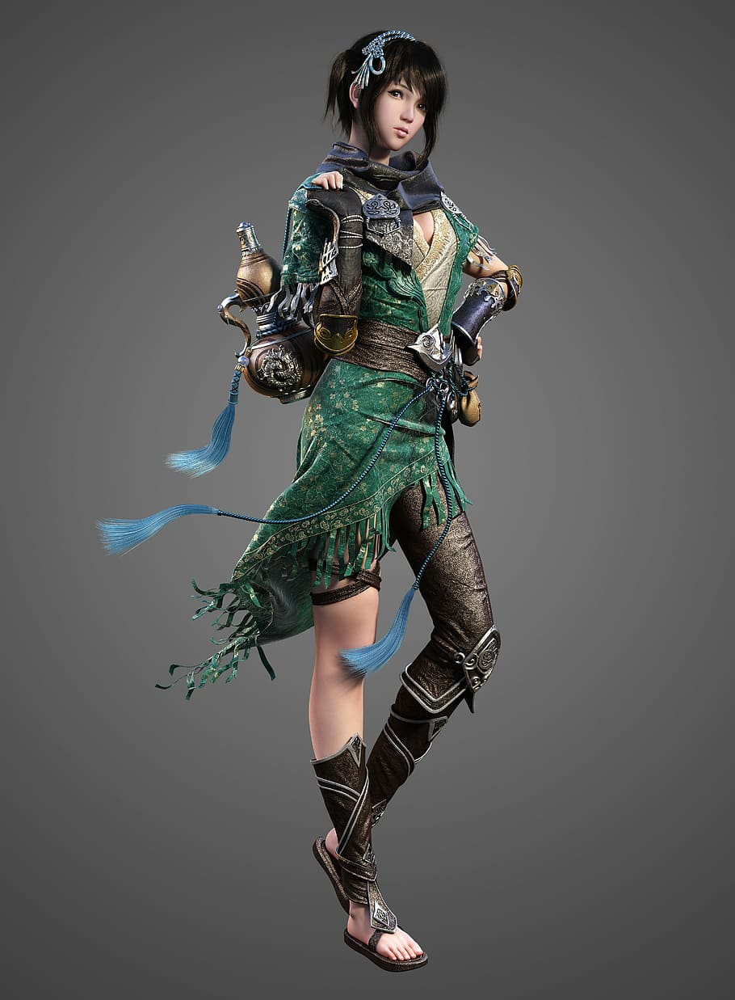

Welcome to Find Your Character!
Your #1 Stop for Cosplaying Inspiration

What's So Special About This Site?
Why will people come to FYC?
People will come to my site because they will be looking for ideas about who they should dress up as. People can be preparing for a cosplay event, a halloween party, or may simply just want to dress up. These will be people who don’t know who they want to dress up as, but want to find a fitting character that matches them.
What questions will visitors expect FYC to answer for them?
The ultimate question is “who should I dress up as?” The site will answer this with multiple suggestions. The main question can also be broken down into other questions. “Which characters are not too expensive to cosplay?” “What characters look like me already?” “How can I save time and resources?” The questions asked can vary based on the user, but these are some common ones the site will have to tackle.
What types of activities will visitors want to complete on FYC?
Visitors will want to filter through hundreds of characters based on their preferences. The filtering system should be intuitive and easy to use. Some users may also want to upload their own character references. Users should be able to answer characteristic questions, filter characters, receive recommendations that match them, and easily view reference images for each character. Users should also have the ability to create new character posts, upload their own images, and set their own tags that will be read by the filtering system. If users want they can make an account to save their preferences, but this won’t be required for guest visitors.
What information is necessary to complete any actions FYC offers?
Users are encouraged to create an account. The ability to upload new characters is only available to registered users. Guest users will be able to search the system as normal, but their settings and filters won’t be saved when they come back. It is important to know from the user what categories they want their character to fall into, what fandoms they prefer, their basic appearance, and whatever info the user wants to be considered in the search.
Why will visitors come to FYC instead of another site?
My site at the time of being published will be the only site that focuses on a character filter. There aren’t any other sites that offer the services I provide. Even if a competitor site is made using this same idea, my site’s database will already be larger from users uploading more entries. My site will be the most easy to use, the most focused, and have the most available options.
Site Abilities
Guest User Filtering
The main feature of the site, the character filter, will be usable even to guest visitors who don’t create an account. People don’t like being forced to make an account for a site they don’t even know if they like yet. By letting people use the site without an account visitors will be more likely to come back and recommend it to their friends. As guest users keep using the site I’ll program pop-ups to remind them of the benefits of creating an account. Guests will not be able to upload their own characters or images, however. That feature is available only for logged in users. Guests will also not be able to “like” posts created by other users.
Full User Filtering
People who sign up and make an account with the site will have access to all the features the site offers. They will be able to use the character filter the same as before, but now they will be able to save their preferred filters as settings. The account will remember what this person looks like and what fandoms they enjoy the most, so it will automatically generate ideas without the user having to painfully recheck all those filters.
Character Uploading
Logged in users will also have the ability to upload new characters of their own. Users will see a new button that says “Upload New Character” and from there will be able to fill out the guidelines for a new searchable character that others can see. This character outline will ask for a full body reference image and a series of other questions such as fandom, age, gender, hair color, eye color, etc.
Cosplay Examples
Lastly, users will be able to upload images of their own cosplays for others to see! Underneath a popular character such as “Link” from “The Legend of Zelda”, users can click a button that says “See What Others Have Done”. This button drops down pictures of other cosplayers who have dressed up as Link, with pictures being sorted by “most liked”. Users can like their favorite images of other cosplayers and choose to upload images of themselves dressed as the same character. Site Moderators will have the ability to take down any inappropriate or unrelated images users post.
Cosplay Tips
Similar to the example images of others cosplaying as the character, there will also be a section called “Tips for This Character” In this section, rather than users uploading their own cosplay pictures, they can upload text messages for others to see. These tip messages can include any advice other users think is valuable for people. Some examples include “I used an old dress shirt and modified it a little to make the tunic”, “You definitely need a wig for this character, here’s a link to the one I bought”, and “This character’s outfit is very warm and was great to use while trick or treating!” Once again tips will be sorted based on a “like” system, and Site Moderators will be able to remove inappropriate or spam tips.